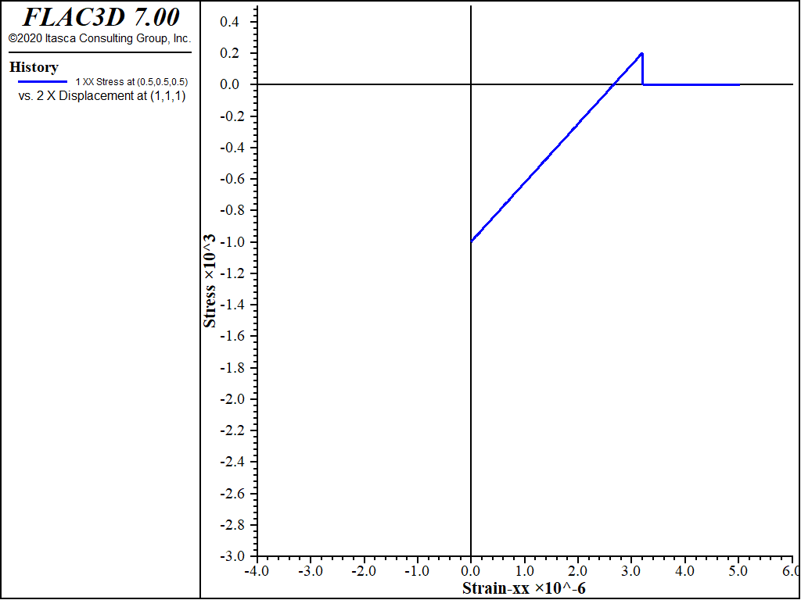
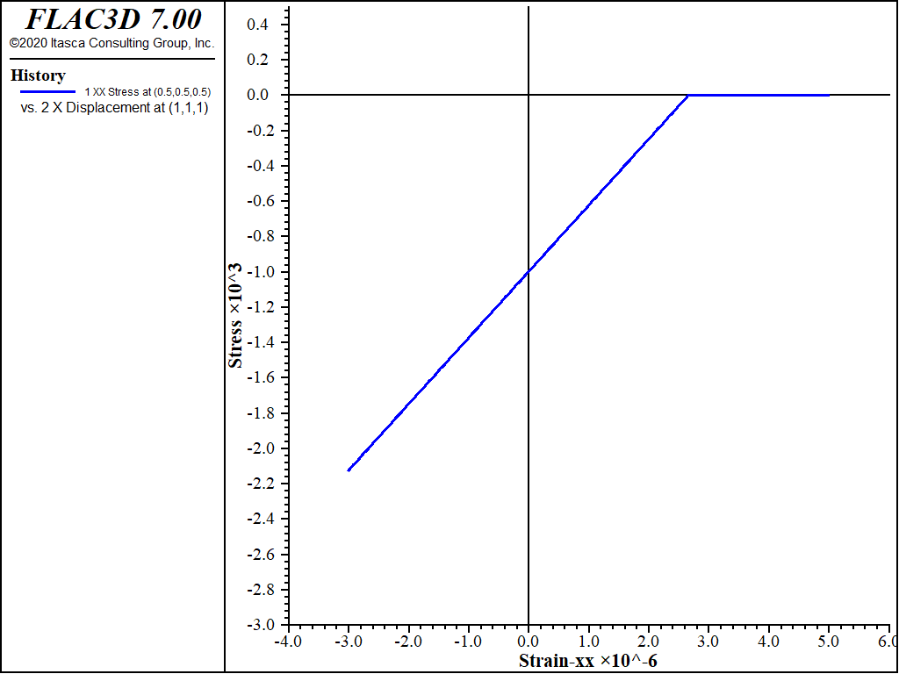
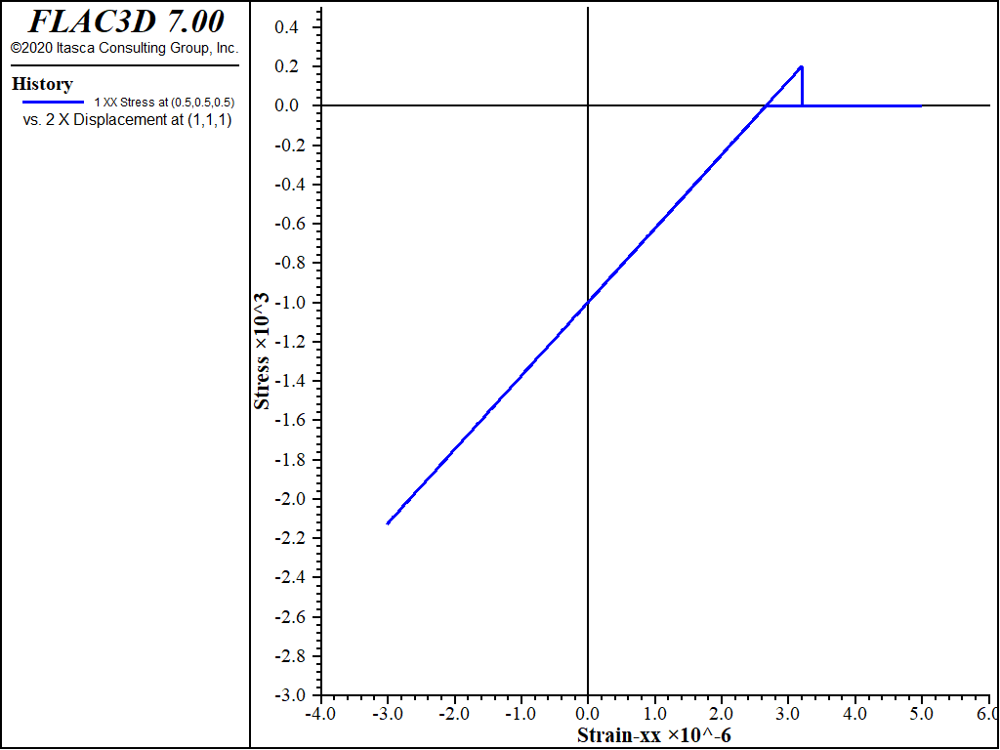
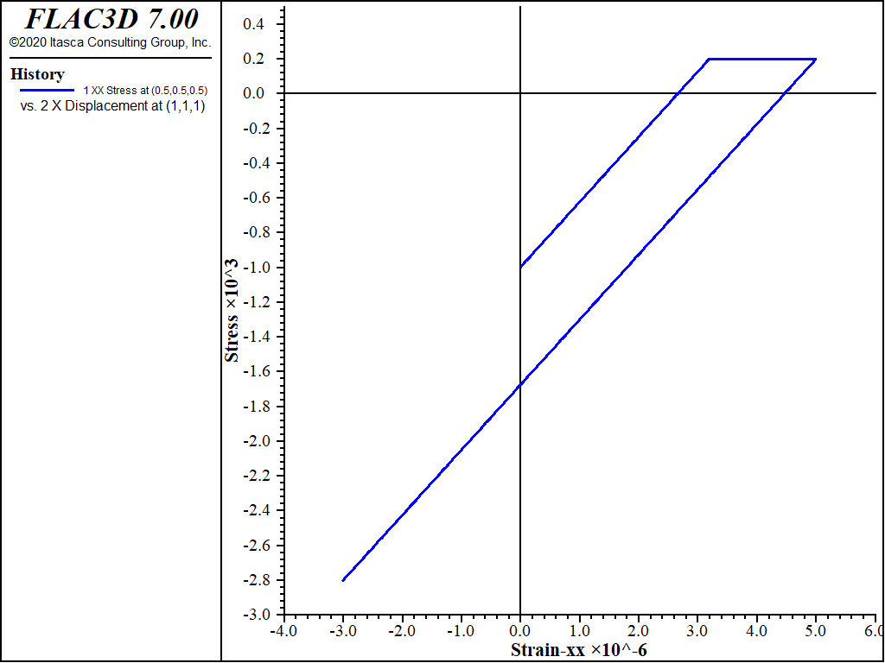
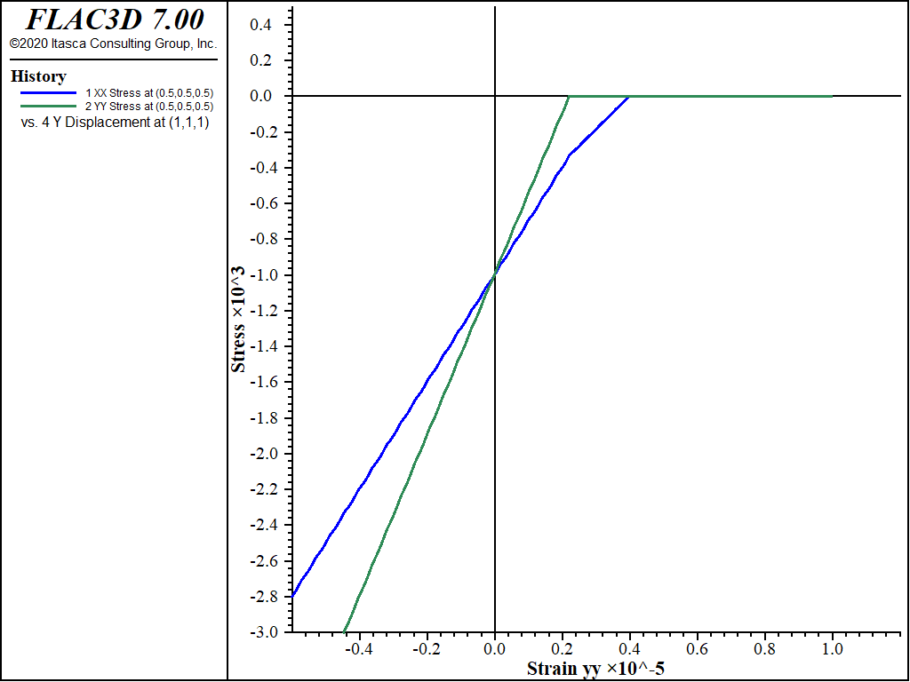
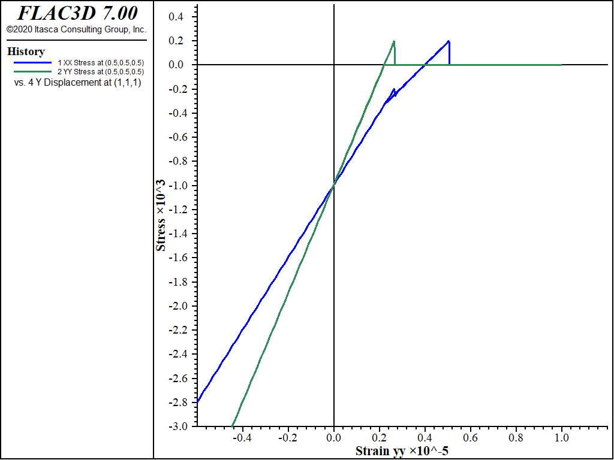
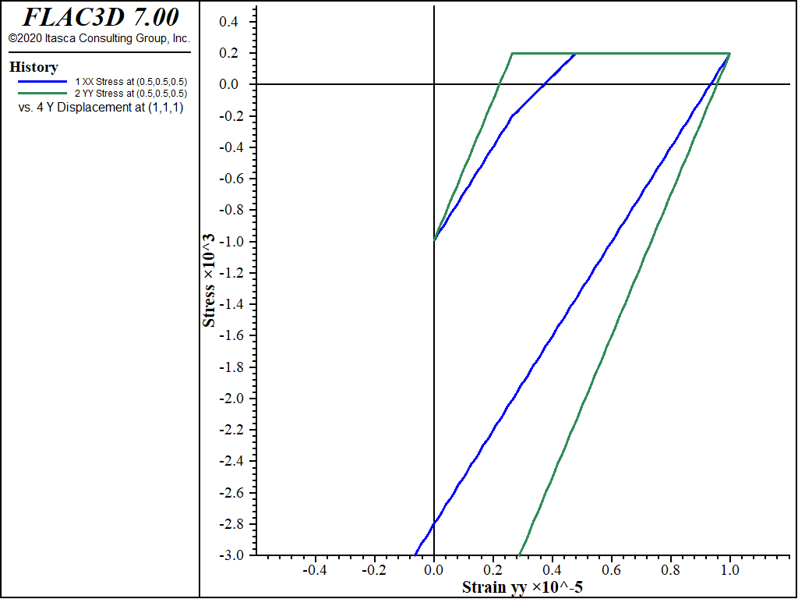

MohrT 模型的单单元加载-卸载试验
注意
要在 FLAC3D 中查看此项目，请使用菜单命令 。 选择“ConstitutiveModels/ SingleZoneMohrCoulombTensionCrack”并选择“SingleZoneMohrCoulombTensionCrack.f3dprj”以加载。 该项目的主数据文件见本示例末尾（main data file）。
本示例通过单个网格单元在单向/双向应变下的准静态加载-卸载，比较了 MohrT 模型（MohrT Model） 与传统 Mohr-Coulomb 模型（Mohr-Coulomb model）。
单网格单元的准静态加载-卸载——单向应变
一个单位尺寸的网格单元承受单向应变，包括拉伸和压缩的反向。材料参数汇总于 表 1（Table 1）。该网格单元初始各向同性应力为 -1000 Pa。 \(y\) 方向上的应变为零。\(y\) = 0 和 \(z\) = 0 平面内的速度固定为零。\(x\) = 1 平面内的速度为 1×10-8 m/s （拉伸）。网格单元应变计算 500 步；然后 \(x\) = 1 平面内的速度 变为 -1×10-8 m/s（压缩），网格单元再应变计算 800 步。 施加的应变历史汇总于 表 2（Table 2）。数据文件附于 “SingleZoneMohrCoulombTensionCrack-1d.dat”。
| 材料参数 | 值 |
|---|---|
| \(K\) (Pa) | 2.5e8 |
| \(G\) (Pa) | 1.5e8 |
| \(\phi\) | 30 |
| \(\psi\) | 10 |
| \(c\) (Pa) | 1000 |
| \(\sigma^t\) (Pa) | 200 |
| 加载方向 | 应变范围 |
|---|---|
| 拉伸 | \(x\) 方向：0 至 5e-6 |
| 压缩 | \(x\) 方向：5e-6 至 -3e-6 |
图 1（Figure 1） 显示了网格单元拉伸过程中 \(x\) 方向的应力与应变关系。 当应变从零变化到 5×10-6 时，应力从初始的 -1000 Pa 变化到抗拉强度限值 200 Pa， 随后因应力达到抗拉强度限值时产生裂缝而突然降至零。 在进一步拉伸应变期间，加载方向上的应力保持为零。查询网格单元参数时， 裂缝数（裂缝数量（number-cracks））为 1， 1 号裂缝的单位法向为 (1,0,0)。
图 2（Figure 2） 显示了试验压缩阶段网格单元 \(x\) 方向的应力与应变关系。如预期，在裂缝闭合之前 不会产生压应力。裂缝闭合后，应力-应变路径 沿加载的相反方向进行。查询网格单元参数时，裂缝数 仍为 1，1 号裂缝（单位法向）仍为 (1,0,0)。 图 3（Figure 3） 中重叠的加载和卸载路径表明，模型的 拉伸开裂是完全可逆的，并且在裂缝闭合之前不会产生压应力。图 3（Figure 3） 显示了加载和卸载的完整应力与应变路径。
将完整应力-应变路径与模型改为 Mohr-Coulomb 模型（Mohr-Coulomb model）但材料参数与 表 1（Table 1）相同时生成的路径（示于图 4（Figure 4））进行比较是很有意思的。MohrT 模型与 Mohr 模型的两个主要区别是：
- 当某一主应力达到抗拉强度限值时，Mohr-Coulomb 模型会使其保持在抗拉强度限值，而 MohrT 模型会使其突然降至零；
- 在应变率反向（由拉伸变为压缩）之后，Mohr-Coulomb 模型会立即产生压应力，而 MohrT 模型只有在裂缝完全闭合后才产生压应力。


图 1：拉伸应变过程中 x 方向的应力与应变关系。


图 2：反向应变过程中 x 方向的应力与应变关系。


图 3：完整应变历史过程中 x 方向的应力与应变关系。


图 4：采用传统 Mohr-Coulomb 模型时完整应变历史过程中 x 方向的应力与应变关系。
单网格单元的准静态加载-卸载——双向应变
一个单位尺寸的网格单元承受双向应变，包括拉伸和压缩的反向。本示例使用与 表 1（Table 1）相同的材料参数。该网格单元初始各向同性 应力为 -1000 Pa。\(x\) = 0 和 \(y\) = 0 平面内的速度固定为 零。\(x\) = 1 平面内的速度为 1×10-8 m/s，\(y\) = 1 平面内的速度为 2×10-8 m/s（即两个方向均拉伸）。网格单元 应变计算 500 步；然后 \(x\) = 1 平面内的速度变为 -1×10-8 m/s，\(y\) = 1 平面内的速度变为 -2×10-8 m/s（即两个方向均压缩），网格单元再应变计算 800 步。施加的应变历史汇总于 表 3（Table 3）。数据文件附于 “SingleZoneMohrCoulombTensionCrack-2d.dat”。
图 5（Figure 5） 显示了拉伸方向加载过程中应力 \(\sigma_{xx}\) 和 \(\sigma_{yy}\) 随应变的变化。当 \(y\) 方向的应变 从零变化到 1×10-5 时，应力 \(\sigma_{yy}\) 从 初始的 -1000 Pa 变化到抗拉强度限值 200 Pa，随后因应力达到抗拉强度限值时产生裂缝而突然降至零。在进一步拉伸应变期间，应力 \(\sigma_{yy}\) 保持 为零。在 \(\sigma_{yy}\) 降至零的那一步之后， 网格单元中的裂缝数（裂缝数量（number-cracks））被设为 1，1 号裂缝的单位法向 为 (0,1,0)。
有意思的是，当第一条裂缝产生时，\(\sigma_{xx}\) 应力也发生突变； 这是因为 Mohr 型破坏模型基于最大和最小主应力，当本例中作为最大主应力的 \(\sigma_{yy}\) 突然从 200 Pa 变为零时，会对其他主应力 产生影响。
当 \(\sigma_{xx}\) 应力达到 200 Pa 时，发展出法向为 (1,0,0) 的第二条裂缝。在加载路径结束时，裂缝数（裂缝数量（number-cracks））为 两条。图 6（Figure 6） 显示了拉伸应变之后反向（压缩） 应变期间的应力-应变行为。\(x\) 平面内的裂缝首先闭合， \(y\) 平面内的裂缝随后闭合。如 图 7（Figure 7）（显示加载和卸载的完整应力与应变路径）所示，裂缝闭合后，压缩期间的应力-应变路径 沿着拉伸期间的路径。
当模型改为传统 Mohr-Coulomb 模型时，加载和卸载的完整应力与应变路径对比绘于 图 8（Figure 8）。 本示例还证实了 MohrT 模型中拉伸开裂的可逆性。
| 加载方向 | 应变范围 |
|---|---|
| 拉伸 | \(x\) 方向：0 至 5e-5 |
| \(y\) 方向：0 至 1e-4 | |
| 压缩 | \(x\) 方向：5e-5 至 -3e-5 |
| \(y\) 方向：1e-4 至 -6e-4 |

图 5：拉伸应变过程中 y 方向的应力与应变关系。


图 6：反向应变过程中 y 方向的应力与应变关系。


图 7：完整应变历史过程中 y 方向的应力与应变关系。


图 8：采用传统 Mohr-Coulomb 模型时完整应变历史过程中 y 方向的应力与应变关系。
数据文件
SingleZoneMohrCoulombTensionCrack-1d.dat
model new
model large-strain off
zone create brick size 1 1 1
zone face skin
zone cmodel assign mohr-coulomb-tension
zone property bulk 2.5e8 shear 1.5e8 cohesion 1e3 ...
fri 30 dilation 10 tension 200
;
zone initialize stress xx -1000 yy -1000 zz -1000
zone face apply stress-yy -1000 range group 'North' or 'South'
zone face apply stress-zz -1000 range group 'Bottom' or 'Top'
;
history interval 1
zone history stress-xx position (0.5,0.5,0.5)
zone history displacement-x position (1.0,1.0,1.0)
;
zone face apply velocity-x 0.0 range group 'West'
zone face apply velocity-x 1e-8 range group 'East'
model step 500
zone face apply velocity-x -1e-8 range group 'East'
model step 800
model save 'mohrt1d'
SingleZoneMohrCoulombTensionCrack-2d.dat
model new
model large-strain off
zone create brick size 1 1 1
zone face skin
zone cmodel mohr-coulomb-tension
zone property bulk 2.5e8 shear 1.5e8 cohesion 1e3 ...
fri 30 dilation 10 tension 200
;
zone initialize stress xx -1000 yy -1000 zz -1000
zone face apply stress-zz -1000 range group 'Bottom' or 'Top'
;
history interval 1
zone history stress-xx position (0.5,0.5,0.5)
zone history stress-yy position (0.5,0.5,0.5)
zone history displacement-x position (1.0,1.0,1.0)
zone history displacement-y position (1.0,1.0,1.0)
;
zone face apply velocity-x 0.0 range group 'West'
zone face apply velocity-y 0.0 range group 'South'
zone face apply velocity-x 1e-8 range group 'East'
zone face apply velocity-y 2e-8 range group 'North'
model step 500
zone face apply velocity-x -1e-8 range group 'East'
zone face apply velocity-y -2e-8 range group 'North'
model step 800
model save 'mohrt2d'
| 这些内容对您有帮助吗？… | FLAC3D © 2019, Itasca | 原文更新于 2020 年 10 月 8 日 |
| 版权与免责声明 | ||